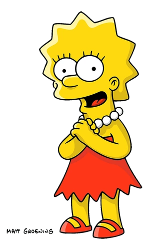

Homer Jay Simpson

Marjorie Bouvier Simpson
1. Uma das coisas mais originais de Marge é seu cabelo. De fato, ele é tão volumoso que vários itens já acabaram se perdendo por lá!
Na sétima temporada,
um grande pote de dinheiro e um cheque para pagar pelos danos causados ao carro de Homer acabaram sendo encontrados no cabelo da Marge.
Na quinta temporada, até um enxame de morcegos saiu voando da cabeleira da personagem!
2. De acordo com Matt Groening, o penteado verticalizado de Marge foi criado com a intenção de esconder as
orelhas de coelho que a personagem originalmente teria. A ideia era que isso fosse revelado no último episódio, mas foi decidido que essa característica
seria muito ridícula, até mesmo se tratando de uma série como Os Simpsons.
3. Na 21ª temporada, Marge e Homer se juntam à equipe olímpica depois que ela descobre seu amor pelo curling. Após conquistar o título,
Marge revela que conseguiu vencer usando a mão esquerda porque é ambidestra. Na verdade, ela nasceu canhota, mas praticava o uso da mão direita
dede a infância para que outras crianças não zombassem. Como resultado, ela consegue usar as duas mãos perfeitamente.
4. Embora Marge Simpson tenha se contentado em ser uma dona de casa durante a maior parte da série, alguns espectadores podem ficar
surpresos ao descobrir que ela já desempenhou mais de 20 ocupações diferentes ao longo da série. Além de meteorologista e professora, ela até serviu
como prefeita de Springfield depois de concorrer com sucesso contra o prefeito Quimby.
5. Marge Simpson sempre odiou a amamentação, de modo que Lisa foi a única criança que ela conseguiu amamentar. Este detalhe vem à tona quando sua nova vizinha irritante Emily e suas amigas estão amamentando em público no episódio “O Dia em que a Terra Parou Legal”, da 24ª temporada. De certo modo, isso explica por que Marge opta por amamentar Maggie com mamadeira.
6. Marge e sua família são de origem francesa, o que ajuda a explicar o seu sobrenome Bouvier.
7. Por conta dos seus problemas de visão, Marge precisa usar óculos, mas não usa porque acredita que eles lhe dão uma aparência deselegante.
um grande pote de dinheiro e um cheque para pagar pelos danos causados ao carro de Homer acabaram sendo encontrados no cabelo da Marge.
Na quinta temporada, até um enxame de morcegos saiu voando da cabeleira da personagem!
2. De acordo com Matt Groening, o penteado verticalizado de Marge foi criado com a intenção de esconder as
orelhas de coelho que a personagem originalmente teria. A ideia era que isso fosse revelado no último episódio, mas foi decidido que essa característica
seria muito ridícula, até mesmo se tratando de uma série como Os Simpsons.
3. Na 21ª temporada, Marge e Homer se juntam à equipe olímpica depois que ela descobre seu amor pelo curling. Após conquistar o título,
Marge revela que conseguiu vencer usando a mão esquerda porque é ambidestra. Na verdade, ela nasceu canhota, mas praticava o uso da mão direita
dede a infância para que outras crianças não zombassem. Como resultado, ela consegue usar as duas mãos perfeitamente.
4. Embora Marge Simpson tenha se contentado em ser uma dona de casa durante a maior parte da série, alguns espectadores podem ficar
surpresos ao descobrir que ela já desempenhou mais de 20 ocupações diferentes ao longo da série. Além de meteorologista e professora, ela até serviu
como prefeita de Springfield depois de concorrer com sucesso contra o prefeito Quimby.
5. Marge Simpson sempre odiou a amamentação, de modo que Lisa foi a única criança que ela conseguiu amamentar. Este detalhe vem à tona quando sua nova vizinha irritante Emily e suas amigas estão amamentando em público no episódio “O Dia em que a Terra Parou Legal”, da 24ª temporada. De certo modo, isso explica por que Marge opta por amamentar Maggie com mamadeira.
6. Marge e sua família são de origem francesa, o que ajuda a explicar o seu sobrenome Bouvier.
7. Por conta dos seus problemas de visão, Marge precisa usar óculos, mas não usa porque acredita que eles lhe dão uma aparência deselegante.

Lisa Marie Simpson